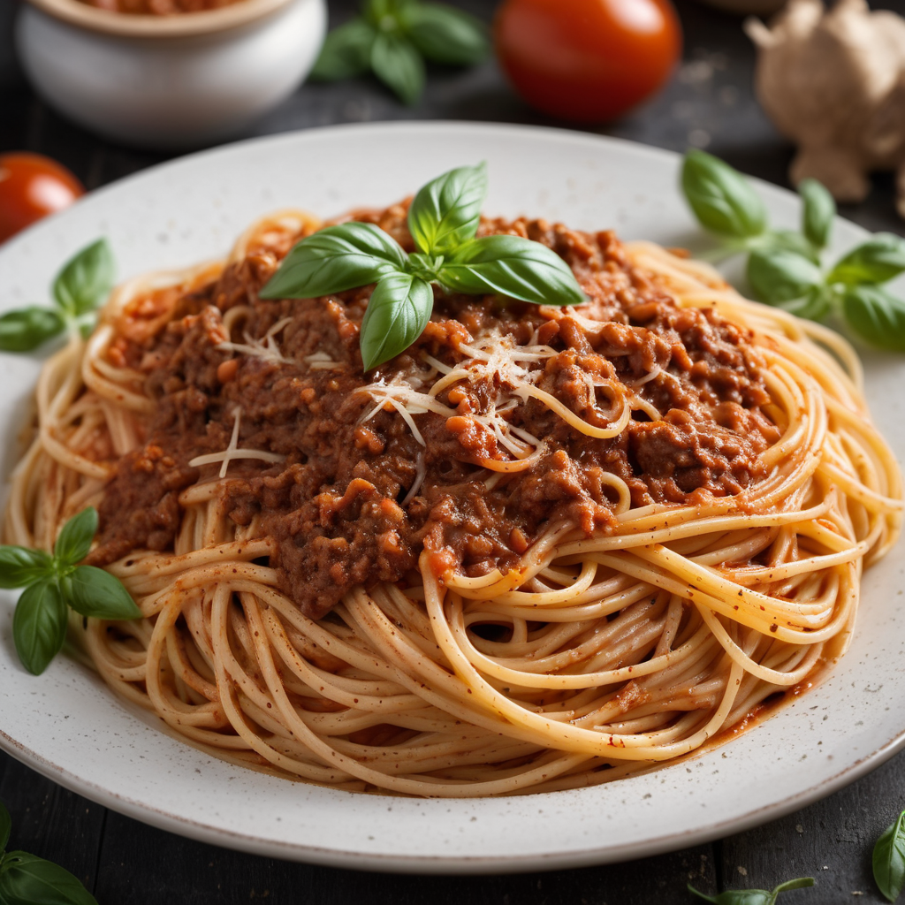

Hozzávalók:
- 300 g spagetti
- 200 g darált marhahús
- 1 db vöröshagyma, apróra vágva
- 2 gerezd fokhagyma, apróra vágva
- 400 g paradicsomszósz
- 1 ek olívaolaj
- 1 tk szárított oregánó
- 1 tk szárított bazsalikom
- Reszelt parmezán sajt a tálaláshoz
- só
- bors
Elkészítés:
- Főzd meg a spagettit bőségesen sós vízben a csomagoláson található útmutatás szerint.
- Közben egy serpenyőben melegítsd fel az olívaolajat közepes lángon.
- Add hozzá az apróra vágott vöröshagymát és fokhagymát, majd pirítsd 2-3 percig, amíg megpuhulnak.
- Dobd rá a darált marhahúst a hagymákra, és pirítsd 5-6 percig, amíg átsül és aranybarnára pirul.
- Öntsd hozzá a paradicsomszószt, és fűszerezd ízlés szerint oregánóval, bazsalikommal, sóval és borssal.
- Főzd további 10-15 percig, hogy az ízek összeérjenek és a ragu besűrűsödjön.
- Amikor a spagetti megfőtt, szűrd le, majd keverd össze a bolognai raguval.
- Tálald reszelt parmezán sajttal megszórva.